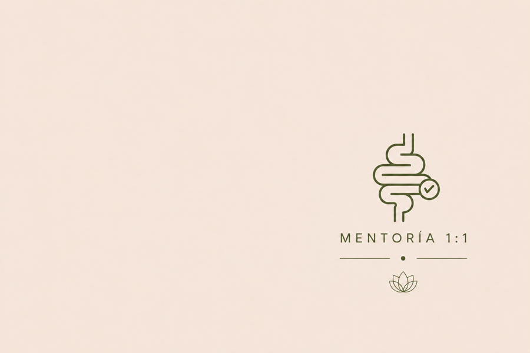

Mentoría individual
Salud Digestiva
Acompañamiento médico integral de 3 meses
Tus síntomas no son el problema. Son el mensaje.
La distensión, la constipación o el malestar digestivo suelen ser la forma que tiene tu cuerpo de indicar que algo necesita atención.
Nuestro objetivo no es tapar síntomas, sino comprender qué los está provocando para ayudarte a recuperar bienestar desde la raíz.
Aplicar a la Mentoría
¿Te suena familiar?
Lo que escucho todos los días en el consultorio
Me frustra que mi tubo digestivo no funcione. Siento que probé todo y nada me da resultados que duren.
Si no tomo laxantes es imposible para mí ir al baño. Ya no sé qué comer para sentirme bien.
Condiciones que abordamos juntas
El proceso
Cómo trabajamos juntas
La mentoría tiene una duración mínima de 3 meses.
Aplicás
Completás un formulario breve contando tu situación actual y tus objetivos de salud.
Primera llamada
Hacemos una consulta médica completa donde revisamos tu historia clínica, síntomas y hábitos en profundidad.
Tu plan personalizado
Diseñamos juntas un plan de alimentación y hábitos adaptado específicamente a tu diagnóstico y tu estilo de vida.
Seguimiento continuo
Encuentros virtuales 1:1 cada 14 días el primer mes, luego cada 30 días. Además, seguimiento vía WhatsApp cuando lo necesites.
Antes de aplicar
¿Esta mentoría es para vos?
Es para vos si…
- Te sentís hinchada constantemente.
- Ir al baño con regularidad es prácticamente imposible.
- Ya consultaste con médicos y solo te dan soluciones con pastillas.
- Buscás un enfoque que entienda a tu cuerpo como un todo, no por partes.
- Sentís que todo te cae mal.
- Estás dispuesta a seguir un plan diseñado para recuperar tu salud.
No es para vos si…
- No completaste estudios con tu médico/a gastroenterólogo/a.
- Querés soluciones mágicas.
- No estás abierta a aprender una nueva forma de alimentarte.
- No tenés intenciones de incluir movimiento en tu rutina diaria.
- Pretendés solucionar este problema en una sola consulta.
Dar el primer paso
Empezá a entender lo que tu cuerpo está tratando de decirte.
Completás un breve formulario para ir conociéndonos y pensar cómo trabajar juntas.